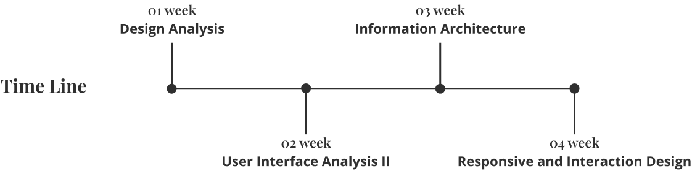
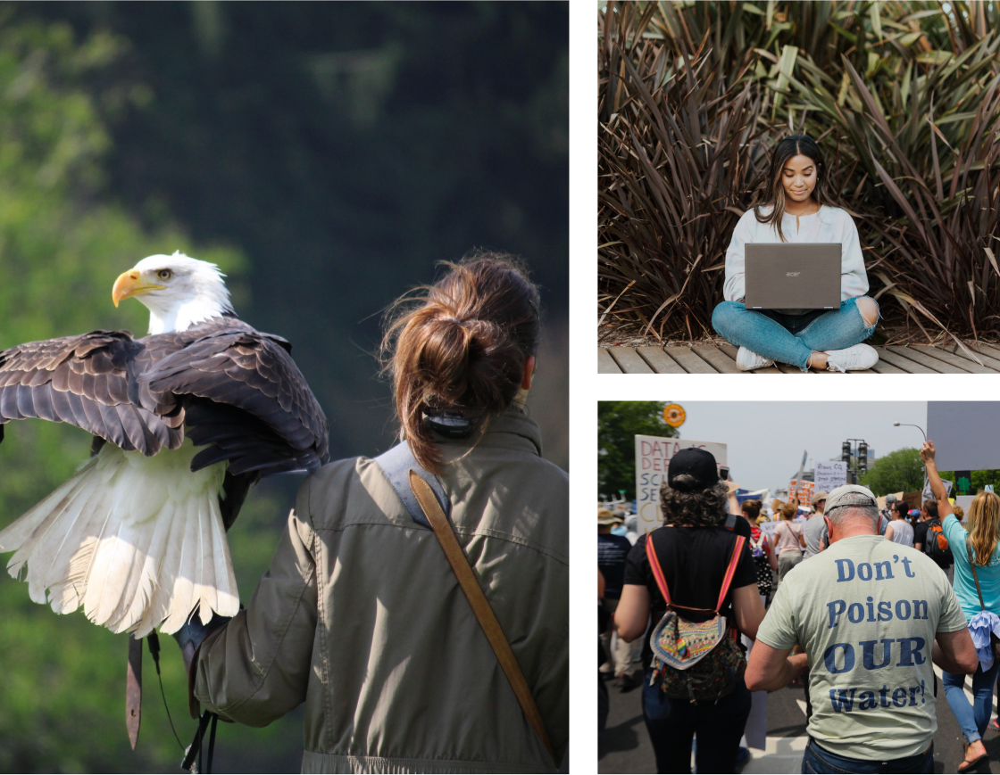

Department of the Interior


The Department of the Interior's current website poses significant challenges for users, including information overload due to excessive content and links, complex navigation, and inefficient content presentation. These issues hinder users in finding vital updates, policies, and resources related to the department's initiatives and programs, emphasizing the need for a comprehensive redesign to enhance user-friendliness and improve the overall web experience.
As the UX/UI designer, my role revolves around the extensive redesign of the Department of the Interior's website, with a primary focus on improving user experience and addressing existing challenges. This involves a comprehensive overhaul of the site's structure, interface, and content layout, all aimed at creating a seamless and user-friendly platform. The overarching goal is to enhance user satisfaction and comprehension, particularly for those who rely on the website for vital information regarding the department's wide-ranging initiatives and programs.
The Department of the Interior's website redesign aimed to enhance user-friendliness and organization. The goal was an intuitive website and app for updates and resources, developed over four weeks using Figma. Research guided the approach, including website analysis, user path study, and heuristic evaluations. Adjustments were made based on findings, such as dividing the Bureaus and Offices section. The iterative prototyping phase, shaped by user testing, resulted in an efficient and user-centric final design.
General public, researchers, academics, businesses, industries, environmental organizations, journalists, students and educators usually access to the website.
During the research phase, diverse methods were utilized such as detailed website analysis and mapping common user paths. This entails capturing screenshots from each page to uncover navigation trends and assess individual page design. Heuristic evaluations play a key role, providing a comprehensive review of information flow across the site's interface. These efforts establish a solid foundation for making informed, data-driven decisions in the project's later stages. After interviewing 5 users on each stage and analyzing the navigation and footer flow using the card sorting method, a few changes were made to have a better user flow. The Department of the Interior's website contains too many links and information that are relevant to the users who need to find specific information. As a result, the Bureaus and Offices tab was split to have less content on each branch and facilitate the user's search.
After interviewing 5 users on each stage and analyzing the navigation and footer flow using the card sorting method, a few changes were made to have a better user flow. The Department of the Interior's website contains too many links and information that are relevant to the users who need to find specific information. As a result, the Bureaus and Offices tab was split to have less content on each branch and facilitate the user's search.
.jpg)
- Too many links on each tab
- Contact us is hard to find
.jpg)
- Used to evaluate IA
- Two secondary labels were created to distribute the information properly
Two secondary labels were created to distribute the information properly Used to evaluate IA
By studying user navigation patterns on the website, targeted changes were introduced to improve how users move through the site and enhance its visual scanability. The Department of the Interior's website had a surplus of links and information, tailored to users seeking specific details. To address this, the Bureaus and Offices section were strategically divided, reducing content density on each, which streamlined how users retrieve information. These enhancements collaboratively work towards an optimized user experience, aligning seamlessly with the project's main goals.
After interviewing 5 users on each stage and analyzing the navigation and footer flow using the card sorting method, a few changes were made to have a better user flow. The Department of the Interior's website contains too many links and information that are relevant to the users who need to find specific information. As a result, the Bureaus and Offices tab was split to have less content on each branch and facilitate the user's search.